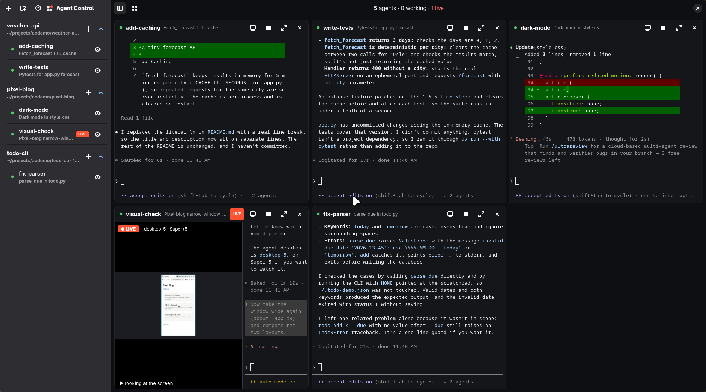
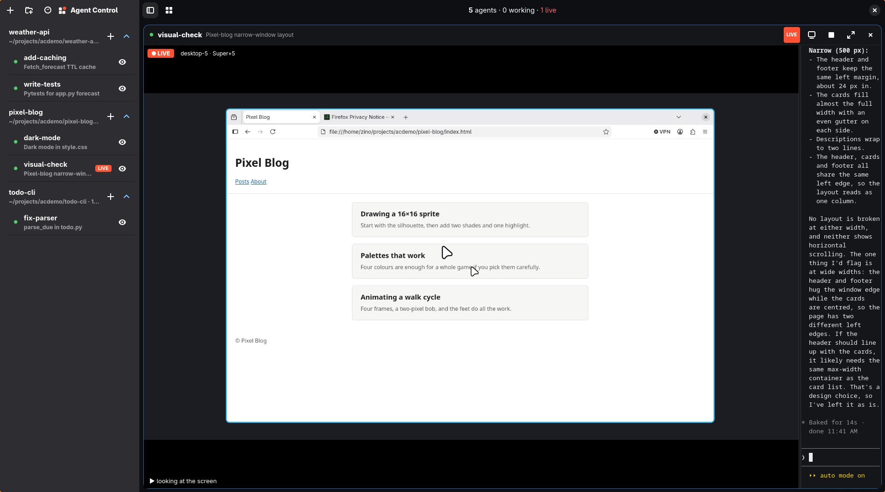

▦
Tiles, not tabs
Each agent gets a tile with its real Claude Code terminal and a working or idle state. Focus one, or grid them automatically or in 1–4 columns.
Run your agents in one window. Watch them work, type straight into any of them, and see the desktops they're using, live.

Five agents, grouped by project. One is streaming its own desktop.
Agent Control turns a pile of Claude Code sessions into a dashboard you can actually read.
Each agent gets a tile with its real Claude Code terminal and a working or idle state. Focus one, or grid them automatically or in 1–4 columns.
The terminal is live. Click into a tile and answer a question, or send a new instruction, without leaving the grid.
Name a working directory once. Agents are grouped by the project they run in, and each project has a one-click + to start another agent there.
With hypr-computer, each agent gets its own desktop. Its tile streams the screen with the last action as a ticker.
Search your recent Claude Code sessions by title, prompt or folder, and continue one in a new agent in its original directory.
Open the TokenTracker dashboard beside your agents: cost and usage per day, model, project and session, plus subscription limits.
ac CLIStart, message, read and wait for agents from any shell, including from another agent. Every command works on the same agents you see in the window.
# one project, one task, one wait $ ac project add my-app ~/code/my-app $ ac new fix-tests -P my-app -p "Run the tests, fix what fails, summarize." $ ac wait fix-tests -t 900 && ac peek fix-tests -n 60 # from anywhere, to anyone $ ac ls $ ac send fix-tests "also update the changelog"

Focus an agent to watch its desktop full size while you read along in its terminal. Streams only capture while visible, so idle screens cost almost nothing.
Agent Control is a Python app with a native GTK 4 interface. Clone it, run the installer, and it's in your app launcher.
# Fedora: sudo dnf install tmux python3-gobject gtk4 libadwaita vte291-gtk4 $ git clone https://github.com/zinoos/agent-control.git ~/projects/agent-control $ cd ~/projects/agent-control $ ./install.sh # links ac + agentcontrol, adds the launcher entry $ ./install.sh --skill # also installs the Claude Code skill for your agents $ agentcontrol
Linux with Wayland or X11 · claude on your PATH, logged in · tmux ·
Python 3.10+ · MIT licensed